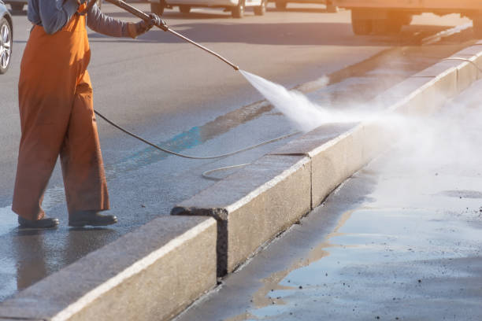

Need top-quality HVAC solutions in Travilah Maryland ? We provide professional installation, maintenance, and repair services, keeping your home or business comfortable and energy-efficient.
Click Here To Call Us (877) 848-1711When it comes to reliable and high-quality HVAC services, our Travilah Maryland HVAC Contractor stands out as the preferred choice for homeowners and businesses alike. With years of experience and a commitment to excellence, we specialize in providing comprehensive heating, ventilation, and air conditioning solutions that keep your space comfortable year-round.
Our team of skilled technicians is dedicated to delivering exceptional service, whether you need HVAC installation, maintenance, or repair. We utilize advanced techniques and state-of-the-art equipment to ensure efficient and long-lasting results. From routine air conditioner tune-ups to emergency furnace repairs, we are equipped to handle any HVAC challenge swiftly and effectively.
We prioritize customer satisfaction, aiming to deliver prompt and reliable service with a focus on energy efficiency and sustainability. Our goal is not just to meet but to exceed industry standards, providing you with the peace of mind that comes from knowing your HVAC system is in capable hands.
Partnering with our HVAC contractor means access to affordable solutions, transparent pricing, and a team that genuinely cares about your comfort. Choose us for your heating and cooling needs and experience the difference of professional, reliable service in Travilah Maryland and beyond.
Residential & commercial HVAC Contractor
Quality services at affordable prices
Immediate 24/ 7 emergency services


When it comes to keeping your home or business comfortable year-round, a reliable HVAC system is essential. At HVAC Contractor, we provide top-notch HVAC repair and maintenance services across Travilah Maryland ensuring your heating and cooling systems run efficiently all year long.
Whether your air conditioning system isn’t cooling properly or your heating unit is failing to keep you warm, our certified technicians have the skills and experience to diagnose and fix the issue quickly. We specialize in all major HVAC brands and offer both residential and commercial services, including:
Air Conditioning Repairs & Installation
Furnace and Heater Maintenance
Preventive HVAC Maintenance
Duct Cleaning and Sealing
Energy Efficiency Solutions
Regular maintenance is crucial for extending the lifespan of your HVAC system and preventing costly repairs down the road. With our affordable maintenance plans, you can ensure that your HVAC system operates at peak efficiency, saving you money on energy bills and repairs.
Our reliable HVAC services in Travilah Maryland are backed by years of expertise and a commitment to customer satisfaction. We prioritize your comfort, offering same-day service and a 100% satisfaction guarantee. No matter the size or complexity of the job, you can trust us to get it done right the first time.
Contact HVAC Contractor today to schedule your HVAC repair or maintenance in Travilah Maryland . Stay comfortable all year round with our professional services!
Residential & commercial HVAC Contractor
Quality services at affordable prices
Immediate 24/ 7 emergency services
A reliable central air conditioning system is a must for ensuring your home remains cool and comfortable during those hot summer months. At HVAC Contractor, we specialize in the installation and maintenance of **central air conditioning systems** providing homeowners with effective cooling solutions tailored to their specific needs.
Central air conditioning works by distributing cool air throughout your home via a system of ducts, ensuring even temperature control in every room. Our experienced technicians guide you through the process of selecting the right equipment based on your home’s size and cooling requirements. We only install high-efficiency units from trusted manufacturers, ensuring you receive not just quality, but also energy-saving capabilities.
In addition to installation, we offer comprehensive repair and maintenance services. Regular maintenance is vital in preventing unexpected breakdowns and ensuring your system operates efficiently. Our team is committed to providing exceptional service, whether you require seasonal check-ups or emergency repairs.
For **central air conditioning systems** in Travilah Maryland trust HVAC Contractor to deliver effective solutions and keep your home comfortably cool throughout the summer.

In colder climates, a reliable boiler can make all the difference in home comfort. At HVAC Contractor, we offer expert Boiler Installation and Repair services tailored to your heating needs. Our skilled technicians ensure that your boiler is installed safely and operates efficiently, providing consistent warmth when you need it most.
Our repair services are prompt and thorough, focusing on restoring your boiler’s efficiency and longevity. We understand the importance of a dependable heating source, so we work tirelessly to exceed your expectations and provide peace of mind. Choose us for your boiler needs for quality workmanship and unmatched customer service in Travilah Maryland .

Zoned HVAC systems are an innovative solution to achieving optimal comfort in various areas of a property. At HVAC Contractor, we specialize in the installation of zoned HVAC systems in Travilah Maryland providing customized heating and cooling solutions that cater to individual space requirements.
These systems allow for the independent control of different areas—known as zones—within your home or business. This means that you can customize the temperature settings in each zone based on usage, preferences, and occupancy patterns. Zones can be created using both ducted and ductless systems, and our team can guide you in selecting the best approach for your specific layout.
Our installation process involves a thorough assessment of your property to determine the most effective way to create zones that serve your heating and cooling needs. We utilize the latest technology and equipment to ensure precise installation, minimizing energy loss while maximizing comfort.
Zoned HVAC systems not only provide comfort but can also lead to energy savings since you can heat or cool only the occupied areas rather than the entire property. These savings can help offset the initial investment in the system, making it a smart choice for many homeowners and businesses.
In addition to installation, our expert technicians offer ongoing support and maintenance for zoned HVAC systems. We believe that regular maintenance is essential for optimal performance and energy efficiency throughout the lifespan of your system.
At HVAC Contractor, we are dedicated to helping our clients achieve complete comfort with our zoned HVAC system installation services. Contact us today for a consultation and discover how zoned HVAC can enhance your indoor environment.

Understanding your HVAC system’s efficiency starts with a comprehensive energy audit. Our HVAC energy audit and optimization services help you identify inefficiencies and recommend solutions to improve your system's performance, ultimately lowering your energy bills.
During the audit, our trained professionals will assess your HVAC system, insulation, and overall energy usage. We will pinpoint areas of energy loss and discuss potential upgrades or modifications to improve efficiency.
Moreover, we provide personalized optimization strategies, allowing you to take actionable steps toward making your HVAC system more efficient. This may include recommendations for system upgrades, maintenance schedules, or energy-efficient technologies that can further reduce consumption.
Investing in our HVAC energy audit and optimization services is a proactive approach to enhancing your home’s comfort while ensuring that you’re operating at peak efficiency. Choose us for expert guidance and actionable insights that lead to long-term savings.
Proper ventilation is crucial for any home or business, ensuring adequate airflow while improving indoor air quality. At HVAC Contractor, we specialize in the **installation and repair of ventilation systems** providing customers with effective solutions for fresh, clean air.
Our team assesses your property’s unique ventilation needs, helping determine the right system for your space. Whether you’re considering exhaust fans, whole-house systems, or energy recovery ventilators, our expert installations promote health and comfort by effectively managing airflow and humidity levels.
Should your ventilation system require repairs, we are here to provide quick and efficient solutions. Our knowledgeable technicians understand the intricacies of various ventilation technologies and are committed to restoring optimal functioning as quickly as possible.
For **ventilation system installation and repair** trust HVAC Contractor to deliver excellence in service, ensuring you have the fresh, ventilated environment you need to thrive.
Efficient and reliable refrigeration systems are crucial for the success of various businesses, from restaurants to grocery stores. At HVAC Contractor, we specialize in refrigeration system installation, repair, and maintenance, providing tailored solutions that ensure your products remain fresh and your operations run smoothly in Travilah Maryland .
Our team understands that every business has unique refrigeration needs. We conduct detailed assessments of your specific operations to recommend the most effective systems for your requirements, whether that be commercial refrigerators, freezers, or specialized refrigeration solutions.
When it comes to installation, our skilled technicians ensure that refrigerants and other essential components are set up correctly, adhering to all industry standards and regulations. We utilize the latest technology and equipment to ensure optimal performance and energy efficiency, which translates into cost savings for your business.
In addition to installation, we offer ongoing maintenance and repair services for your refrigeration systems. Prompt repairs are critical to preventing the loss of perishable goods and ensuring your business remains operational. Our team is available to address any refrigeration issues swiftly and effectively, minimizing downtime.
Furthermore, we emphasize the importance of regular maintenance to extend the lifespan of your refrigeration equipment. Our maintenance plans include thorough inspections and preventive measures to keep your systems running optimally.
At HVAC Contractor, we are committed to providing reliable refrigeration systems and exceptional service to businesses . Contact us today to discuss your refrigeration needs and discover how we can support your business with efficient solutions.

Carbon monoxide is a colorless, odorless gas that poses serious health risks if not detected promptly. Our carbon monoxide testing and detection services are vital for ensuring the safety of your home or business. We provide comprehensive assessments and installation of advanced detection systems to keep you protected.
Our trained professionals will perform thorough inspections to identify potential sources of carbon monoxide in your property. This includes examining appliances, heating systems, and flue vents to ensure they are working safely and efficiently.
In addition to testing, we also offer expert advice on the installation of carbon monoxide detectors. Our team will guide you in selecting the right detection systems for your space, ensuring they are strategically placed for maximum effectiveness.
By choosing our carbon monoxide testing and detection services you prioritize the safety of yourself and your family. Trust our expertise to provide the assessment and solutions you need to breathe easy in your home or business.

HVAC issues can surface at any time, which is why we offer reliable 24/7 HVAC services . Our commitment to round-the-clock support ensures you have access to expert help whenever you need it, whether it’s an emergency repair or routine maintenance.
Our team of certified technicians is always on standby to address your heating and cooling needs, confident in handling a wide range of HVAC systems. Whether it's the middle of the night or a holiday weekend, our professionals will respond quickly to ensure you experience minimal discomfort.
In addition to emergency services, our 24/7 availability extends to regular maintenance and inspections, allowing you to schedule convenient appointments that fit your busy lifestyle. We believe that quality service should be accessible at all hours, and we work diligently to uphold that promise.
Choose us for your 24/7 HVAC services and experience reliable, efficient, and professional support any time of the day or night. We are dedicated to maintaining your comfort around the clock.
Years Experience
Expert Technicians
Satisfied Clients
Compleate Projects
When it comes to HVAC services in Travilah Maryland Gaines HVAC Contractor is the trusted choice for reliable, efficient, and expert solutions. We are committed to providing exceptional HVAC installation, repair, and maintenance services across the city, ensuring that your indoor comfort is always at its best, no matter the season.
Our team of certified professionals is equipped with years of experience and in-depth industry knowledge, allowing us to handle all HVAC challenges with precision. Whether you need a new air conditioning unit, a furnace repair, or regular maintenance, we ensure top-notch service that meets your specific needs. With a focus on customer satisfaction, we offer personalized solutions that maximize comfort while keeping energy costs in check.
What sets Gaines HVAC Contractor apart is our dedication to quality. We use only the highest-quality equipment and materials, ensuring long-lasting results for every job. Additionally, our services are backed by a strong warranty, giving you peace of mind. As a local HVAC contractor in Travilah Maryland we pride ourselves on building strong relationships with our customers, offering prompt service and transparent pricing without hidden fees.
Trust Gaines HVAC Contractor for your heating and cooling needs in Travilah Maryland . Our expert team, high-quality service, and commitment to customer satisfaction make us the best choice for homeowners and businesses alike. Choose us for comfort that lasts year-round!
In today's world, ensuring your home is comfortable year-round is crucial. At HVAC Contractor, we specialize in Residential HVAC Installation, delivering top-notch heating and cooling solutions tailored to your specific needs. Our expert team is dedicated to using the latest technology and highest quality equipment to optimize your home’s comfort and efficiency.
Choosing us means opting for expertise and dedication. With years of experience serving Travilah Maryland we provide customized HVAC solutions that not only meet but exceed your expectations. Our trained technicians carry out seamless installations, ensuring optimal performance from day one. We also provide comprehensive evaluations that consider your space, lifestyle, and budget, ensuring you receive the best energy-efficient system possible. Trust us to transform your home into an oasis of comfort and peace.
In the heart of any thriving business lies a commitment to quality. At HVAC Contractor, we understand that a comfortable working environment is vital for productivity. Our Commercial HVAC Services encompass everything from installation to repair and maintenance, ensuring your systems run efficiently.
We pride ourselves on using advanced technology and skilled technicians who understand the complexities of commercial HVAC systems. Our tailored services are designed to meet the specific needs of your business, whether it’s a small office or a large retail space. By choosing us, you benefit from our commitment to excellence and our understanding of local regulations and industry standards . We are your partner in creating a comfortable and productive work environment.
An unexpected HVAC breakdown can disrupt your home or business's comfort and productivity. At HVAC Contractor, we specialize in providing timely and effective HVAC system repairs for residential and commercial clients . Our team of expert technicians is trained to diagnose issues quickly and offer solutions that restore your system to peak performance.
When you contact us for HVAC system repairs, we conduct a thorough inspection to identify the root cause of the problem. Whether it's a faulty thermostat, inadequate airflow, or a malfunctioning compressor, our technicians have the skills and tools at their disposal to address various HVAC problems efficiently. Our expertise covers all types of systems—central air conditioning, heating systems, heat pumps, and more—ensuring that we can tackle any challenge that comes our way.
One of the key reasons clients choose HVAC Contractor for HVAC repair is our commitment to high-quality service. We believe in transparency, so you’ll receive a detailed explanation of the necessary repairs along with a clear estimate before we begin. Our goal is to ensure that you have full confidence in our work and understand the repairs being made to your system.
By prioritizing energy efficiency throughout our repair services, we aim to help you lower your utility bills and reduce the environmental impact of your HVAC system. Additionally, we offer customized maintenance plans that include regular inspections and tune-ups, which can significantly prolong the lifecycle of your HVAC system and preempt potential repairs.
Count on us for reliable HVAC system repairs whenever you need them most. With our 24/7 emergency services, we are always just a phone call away. Trust HVAC Contractor to restore comfort in your space swiftly and effectively. Contact us today to schedule your HVAC repair .
The hustle and bustle of life in Travilah Maryland makes a reliable air conditioning system essential for your comfort. Whether you’re looking to install a new air conditioning unit or need a quick repair for your existing system, our expert team is prepared to handle all your needs. We specialize in air conditioning installation and repair, offering services you can trust.
Our installation process begins with understanding your specific needs and the layout of your space. Our experienced technicians will walk you through the options available, considering factors like efficiency ratings, size, and budget. We are dedicated to helping you find a system that offers the best performance and energy savings for your home or business. We install various air conditioning systems, including central systems and ductless mini-split units, ensuring that you have the ideal solution customized for your space.
In the event that your air conditioning system requires repairs, our qualified technicians are equipped with the tools and knowledge needed to diagnose and fix the problem effectively. We understand that a malfunctioning air conditioning system can lead to uncomfortable and potentially unsafe conditions, especially during the hot summer months.
Our commitment to customer service means you can expect prompt and professional support. We are dedicated to not only resolving your immediate issues but also educating you on best practices to keep your system running efficiently. Choose our air conditioning installation and repair services and you’ll experience top-notch service from start to finish, ensuring your comfort all year long.
When the chilly winter months arrive, having a reliable heating system is crucial to your comfort and safety. HVAC Contractor provides professional **heating system installation and repair** services designed to keep your home warm and cozy throughout the cold season. Our experts possess extensive knowledge about various heating systems, including furnaces, heat pumps, and boilers, ensuring we can cater to your unique heating needs.
Choosing the right heating system involves many considerations, including energy efficiency, affordability, and system longevity. Our skilled technicians conduct comprehensive assessments to recommend the best heating solutions tailored to your home’s specifications. We prioritize installing high-performance units from trusted brands that guarantee long-lasting comfort.
In the event of a breakdown, our team is just a call away for efficient repairs. Our prompt service will diagnose the issue, provide you with straightforward solutions, and have your heating system back in operation in no time. We understand that heating problems can arise at the most inconvenient times, which is why we also offer 24/7 emergency repair services to our clients.
With a wealth of experience in the industry, a commitment to quality, and a focus on customer satisfaction, HVAC Contractor is your go-to provider for **heating system installation and repair** . Rest easy knowing you are working with a reputable company that prioritizes your comfort and well-being.
In today’s eco-conscious world, energy efficiency is more critical than ever in both residential and commercial settings. At HVAC Contractor, we are committed to providing innovative energy-efficient HVAC solutions in Travilah Maryland that reduce energy consumption, lower utility bills, and minimize environmental impact.
Our comprehensive range of energy-efficient solutions begins with an energy audit of your property. We analyze your current HVAC systems, insulation, and overall energy usage to identify areas where improvements can be made. This approach allows us to recommend targeted upgrades or modifications that enhance your system’s efficiency without sacrificing comfort.
From installing high-efficiency furnaces and air conditioners to recommending proper insulation and duct sealing, we cover all aspects of energy-efficient HVAC. Our experienced team stays informed about the latest technology and trends in HVAC systems that optimize energy use, including smart thermostats and programmable zoning systems.
Choosing sustainable solutions also means benefiting from potential tax credits and rebates. We guide our clients through available incentives for upgrading to energy-efficient HVAC systems, ensuring you maximize your savings while contributing to a greener planet.
Moreover, we take pride in the exceptional quality of our service. Our technicians are not only skilled in installation but also in educating clients about proper system settings and maintenance practices. We emphasize the importance of regular HVAC maintenance in prolonging system life and achieving the best efficiency.
At HVAC Contractor, we strive to be the leading provider of energy-efficient HVAC solutions in Travilah Maryland . If you’re ready to start saving on energy bills while supporting environmental sustainability, contact us today for a comprehensive consultation.
In the quest for efficient heating and cooling solutions, **ductless mini-split systems** have gained popularity among homeowners and businesses. At HVAC Contractor, we provide expert installation of these innovative systems in Travilah Maryland allowing for individual temperature control in various rooms without the need for ductwork.
The versatility of ductless mini-split systems makes them a preferred choice, especially in homes without existing duct systems. Our qualified technicians assess your space and advise on the optimal configuration to ensure maximum comfort and efficiency. Ductless systems also offer significant energy savings, as they only heat or cool occupied spaces rather than the entire property—perfect for modern, on-demand lifestyles.
Our installation process is quick and minimally invasive, allowing you to enjoy the benefits of your new system without lengthy interruptions to your daily routine. Plus, with features like inverter technology, ductless systems maintain consistent temperatures while reducing energy consumption.
In addition to installation, we provide ongoing maintenance and repair services for your ductless mini-split system. Our team understands how important it is for your system to remain in top condition, which is why we offer preventative maintenance plans tailored to extend the lifespan of your unit.
When considering **ductless mini-split system installation** HVAC Contractor stands out as the go-to expert. Our dedication to quality installation, customer satisfaction, and expert service ensures you experience unparalleled comfort year-round.
A reliable furnace is essential to ensure warmth and comfort throughout the cold months. At HVAC Contractor, our team specializes in **furnace installation and repair** providing homeowners and businesses with systems that keep spaces cozy when temperatures drop.
Choosing the right furnace can be a daunting task; our experienced technicians guide you through the process, assessing your heating needs and recommending options that prioritize both efficiency and comfort. We only install furnaces from reputable brands known for their reliability and performance, ensuring you receive a product that meets your heating requirements.
Should your furnace need repair, our skilled technicians are equipped with the tools and knowledge to diagnose and resolve any issues efficiently. We aim to minimize downtime because we understand how crucial an operational heating system is during frigid days. Regular maintenance is also key in preventing unexpected breakdowns, which is why we offer comprehensive inspections and service plans designed to keep your furnace running smoothly.
For the best results in **furnace installation and repair** in Travilah Maryland trust HVAC Contractor. With our commitment to quality, exceptional service, and knowledgeable staff, you can count on us to ensure your indoor environment remains warm and welcoming throughout the winter season.
As a versatile heating and cooling solution, heat pumps are an excellent choice for year-round comfort. At HVAC Contractor, we provide comprehensive Heat Pump Services tailored to maximize energy efficiency and comfort .
From initial consultations to installation and ongoing maintenance, our skilled technicians ensure your heat pump operates at peak performance. We specialize in both the installation of new heat pumps and servicing existing systems, focusing on optimizing your home’s energy use. By choosing us, you benefit from our commitment to quality and a deep understanding of local climates, providing reliable solutions that keep your home comfortable all year round.
The quality of the air we breathe is paramount to our health and wellbeing. At HVAC Contractor, we offer comprehensive indoor air quality solutions to ensure you and your loved ones breathe clean air. Poor indoor air quality can lead to various health issues, including allergies and respiratory problems. Our mission is to help you create a healthier indoor environment.
Our team will assess your indoor air quality and identify potential pollutants and sources of contamination. We offer a range of solutions including air purifiers, humidifiers, dehumidifiers, and advanced filtration systems to improve the overall air quality in your home or business. We specialize in creating customized solutions tailored to your specific needs and concerns.
Moreover, we understand the importance of ongoing maintenance and monitoring. Our team will work with you to establish a plan for regular air quality evaluations and maintenance of any installed systems. This proactive approach ensures your indoor environment remains healthy.
When you choose us for your indoor air quality solutions in Travilah Maryland you can expect thorough assessments, expert recommendations, and comprehensive solutions designed to enhance your comfort and health. Trust us to help you create an indoor environment that promotes well-being and peace of mind.
Regular maintenance of your HVAC systems is crucial for their longevity and efficiency. Our HVAC maintenance plans are designed to keep your systems running smoothly, preventing costly repairs and ensuring your comfort throughout the year. We offer comprehensive maintenance services tailored to your specific equipment and needs.
With our maintenance plans, your systems will receive regular inspections and tune-ups, helping identify and address potential issues before they become major problems. Our skilled technicians ensure that your heating and cooling equipment operates at optimal efficiency, ultimately reducing your energy bills and extending the lifespan of your units.
Additionally, our maintenance plans include priority service for any repair needs that may arise, providing you with peace of mind knowing that we will take care of you promptly. We believe that regular maintenance is an investment in your HVAC system’s future, leading to fewer breakdowns and lower costs over time.
Our commitment to customer satisfaction means that we strive to provide high-quality service that you can rely on. Choose our HVAC maintenance plans in Travilah Maryland and experience the benefits of professional care for your heating and cooling systems, ensuring they operate at their best.
Embrace the future of home comfort with Smart Thermostat Installation from HVAC Contractor. A smart thermostat can significantly enhance your HVAC system's efficiency, allowing for precise control and energy management that suits your lifestyle .
Our expert technicians not only install smart thermostats but also provide guidance on effectively using their features to save energy. With their ability to learn your habits and preferences, smart thermostats contribute to savings on your energy bills while maintaining comfort. By choosing us, you tap into the convenience and efficiency of modern technology, demonstrating our commitment to enhancing your home’s comfort.
HVAC emergencies can leave your home or business uncomfortable and uninhabitable. That is why we offer emergency HVAC repair services ready to respond promptly to your urgent heating and cooling needs. Our dedicated team of technicians is available 24/7 to provide immediate support, regardless of the time of day or night.
We recognize that HVAC issues can arise unexpectedly, and our mission is to restore your comfort as quickly as possible. Our skilled technicians arrive equipped with the necessary tools and knowledge to diagnose and resolve any HVAC malfunction efficiently. We take pride in our quick response times, ensuring minimal disruption to your daily activities.
Our approach emphasizes communication and transparency, meaning you will be informed every step of the way. We provide clear explanations of the issues at hand and the options available for repair, allowing you to make informed decisions quickly.
By choosing our emergency HVAC repair services you are assured of reliable, expert-level support at any hour. Trust us to bring you back to comfort when you need it most.
Is your HVAC system outdated or inefficient? At HVAC Contractor, we specialize in HVAC System Upgrades and Retrofits that enhance performance and energy efficiency. Our experienced team provides consultations to assess your existing system and recommend the best solutions.
Upgrading your HVAC system can lead to significant energy savings and increased comfort levels. We work with top manufacturers to provide you with the best options available. Our goal is to ensure you have a system that meets modern efficiency standards, keeping your home comfortable while saving you money on energy bills. Choose us for impactful upgrades that enhance the quality of your indoor environment.
Effective climate control in commercial contexts often relies on specialized solutions like Rooftop HVAC Units. At HVAC Contractor, we provide expert installation and maintenance services for these systems .
Rooftop units are ideal for saving space and optimizing energy efficiency for businesses. Our skilled technicians are equipped to handle rooftop installations, ensuring that systems are safely and properly integrated into your building’s infrastructure. Additionally, we offer ongoing maintenance to ensure systems operate effectively year-round. Choosing us means partnering with a trusted HVAC provider dedicated to your business’s comfort.
Geothermal heating and cooling systems are recognized for their energy efficiency and sustainability. Our geothermal HVAC services in Travilah Maryland offer homeowners and businesses a chance to significantly reduce energy costs while enjoying reliable comfort throughout the year. These systems utilize the earth’s stable temperature to provide both heating and cooling effectively.
Our team specializes in the installation and maintenance of geothermal systems. We’ll conduct thorough assessments to determine the best configuration for your property, ensuring that you benefit from a system that meets your specific demands. Geothermal systems can significantly lower your reliance on fossil fuels, making them a smart choice for environmentally conscious individuals.
In terms of maintenance, our skilled technicians are well-versed in the unique requirements of geothermal systems. Regular servicing ensures optimal performance and long system life, providing you with dependable heating and cooling for years to come.
By choosing us for your geothermal heating and cooling systems you are investing in sustainable technology that delivers long-term savings and enhances your property’s value. We are dedicated to providing expert guidance and quality service that you can trust.
The quality of your indoor air is heavily influenced by your air ducts. Dust, allergens, and pollutants accumulate in air ducts over time, impacting your HVAC system’s efficiency and your home’s air quality. Our air duct cleaning and sealing services are dedicated to keeping your ducts clean and your air fresh.
Our professional team leaves no stone unturned when it comes to cleaning your air ducts thoroughly. Using advanced equipment and techniques, we’ll remove dust, debris, and other airborne pollutants trapped in your ductwork. This process enhances your HVAC efficiency, as clean ducts ensure unimpeded airflow and reduce energy consumption.
Sealing air ducts is equally important, as leaks and gaps can lead to significant energy losses. Our sealing services prevent conditioned air from escaping and reduce the workload on your HVAC system, leading to considerable savings on your utility bills.
Choosing us for your air duct cleaning and sealing means you are prioritizing your indoor air quality and the efficiency of your HVAC system. Experience the difference that clean, sealed ducts can make in your comfort and overall well-being.
Looking for reliable, affordable HVAC solutions for your home or business in Travilah Maryland ? Our expert team at HVAC Contractor is dedicated to providing top-notch heating, ventilation, and air conditioning services that meet the unique needs of both residential and commercial properties. Whether you're in need of a new system installation, repairs, or routine maintenance, we offer cost-effective solutions designed to enhance comfort and efficiency.
As a trusted HVAC provider in Travilah Maryland we pride ourselves on delivering energy-efficient systems that help lower utility bills while ensuring optimal performance. Our professional technicians are highly trained in the latest HVAC technologies, enabling us to handle all types of systems, including central air, heat pumps, and ductless mini-splits.
We understand that HVAC emergencies can occur at any time, which is why we offer 24/7 service for both residential and commercial clients in Travilah Maryland . Our commitment to customer satisfaction ensures that your HVAC system operates smoothly all year round.
Choose HVAC Contractor for affordable HVAC services in Travilah Maryland and experience the perfect balance of quality, efficiency, and cost savings. We work hard to ensure your home or business stays comfortable regardless of the season.
Contact us today for a free consultation and discover how our HVAC solutions can benefit you!
Travilah is a United States census-designated place and an unincorporated area in Montgomery County, Maryland. It is 17.28 square miles (44.8 km2) located along the north side of the Potomac River, and surrounded by the communities of Potomac, North Potomac, and Darnestown—all census-designated places. It had a population of 11,985 as of the 2020 census.
Park Cleaning Services in Travilah Maryland serves a wide range of businesses, including offices, retail stores, medical facilities, and more.
Yes, Park Cleaning Services provides all the necessary cleaning supplies and equipment for our services in Travilah Maryland .
Yes, Park Cleaning Services offers window and blind cleaning as part of our residential and commercial cleaning services in Travilah Maryland .
Yes, we offer same-day cleaning services in Travilah Maryland subject to availability. Contact Park Cleaning Services early to book your appointment.
The cost of our cleaning services varies based on the size of your space and the type of service you require. Contact us for a free quote today.
You can easily book a cleaning service with Park Cleaning Services by visiting our website or giving us a call to schedule an appointment.
We require a 24-hour notice for cancellations or rescheduling . Contact Park Cleaning Services if you need to make any changes.
You can get a free, no-obligation quote by contacting Park Cleaning Services through our website or by giving us a call.
The length of a cleaning session in Travilah Maryland depends on the size of your property and the scope of the service, but most standard cleanings take a few hours.
Our deep cleaning service in Travilah Maryland includes a thorough cleaning of all surfaces, baseboards, hard-to-reach areas, and more detailed tasks that are not covered in regular cleanings.
Yes, Park Cleaning Services uses eco-friendly, non-toxic cleaning products that are safe for both your home and the environment.
The frequency of cleaning depends on your needs, but Park Cleaning Services offers weekly, bi-weekly, and monthly cleaning options to keep your home spotless.
Yes, Park Cleaning Services provides one-time cleaning services in Travilah Maryland perfect for special occasions, post-party cleanups, or seasonal deep cleaning.
Park Cleaning Services values your feedback! You can leave a review or contact us directly to share your experience with our cleaning services .
Yes, Park Cleaning Services allows you to customize your cleaning plan so you can prioritize certain areas or tasks.
Before our team arrives, we recommend picking up any personal items and clearing clutter to give our cleaners full access to your home or office .
Yes, Park Cleaning Services offers specialized cleaning services for Airbnb and vacation rental properties ensuring your space is always guest-ready.
Yes, Park Cleaning Services is fully insured in Travilah Maryland providing you peace of mind when we clean your home or business.
Yes, Park Cleaning Services provides post-construction cleaning removing dust, debris, and making sure your space looks its best after a renovation.
To prepare for a cleaning service in Travilah Maryland we recommend tidying up personal items and securing any valuables. Our team will take care of the rest.
Yes, Park Cleaning Services offers flexible recurring cleaning schedules so you can enjoy a consistently clean home or office.
Yes, Park Cleaning Services offers move-in and move-out cleaning services to ensure your property is clean and ready for the next occupant.
Yes, all cleaners at Park Cleaning Services in Travilah Maryland are background-checked and undergo thorough training to provide top-quality service.
Yes, Park Cleaning Services provides comprehensive commercial cleaning services ensuring your office or business is clean and welcoming.
Our standard cleaning service includes dusting, vacuuming, mopping, bathroom and kitchen cleaning, and general tidying of all living spaces.
Park Cleaning Services offers a wide range of cleaning services in Travilah Maryland including residential cleaning, office cleaning, deep cleaning, move-in/move-out cleaning, and carpet cleaning.
Absolutely! Park Cleaning Services offers customizable cleaning packages to meet your specific needs and preferences.
Park Cleaning Services is known for its attention to detail, eco-friendly products, flexible scheduling, and commitment to customer satisfaction.
Yes, Park Cleaning Services offers professional carpet cleaning services ensuring your carpets are fresh, clean, and free of allergens.
Park Cleaning Services covers all neighborhoods and surrounding areas providing both residential and commercial cleaning services.
I’m so happy with the service from Gaines HVAC Contractor. They were thorough, efficient, and their rates were fair. A reliable company in Travilah Maryland !
Profession
My experience with Gaines HVAC Contractor was fantastic! The technician arrived on time, explained the process, and completed the repair quickly. They’re the best in Travilah Maryland !
Profession
Great experience with Gaines HVAC Contractor in Travilah Maryland . Their team made sure my AC was installed correctly and explained everything in detail. Excellent customer service!
Profession